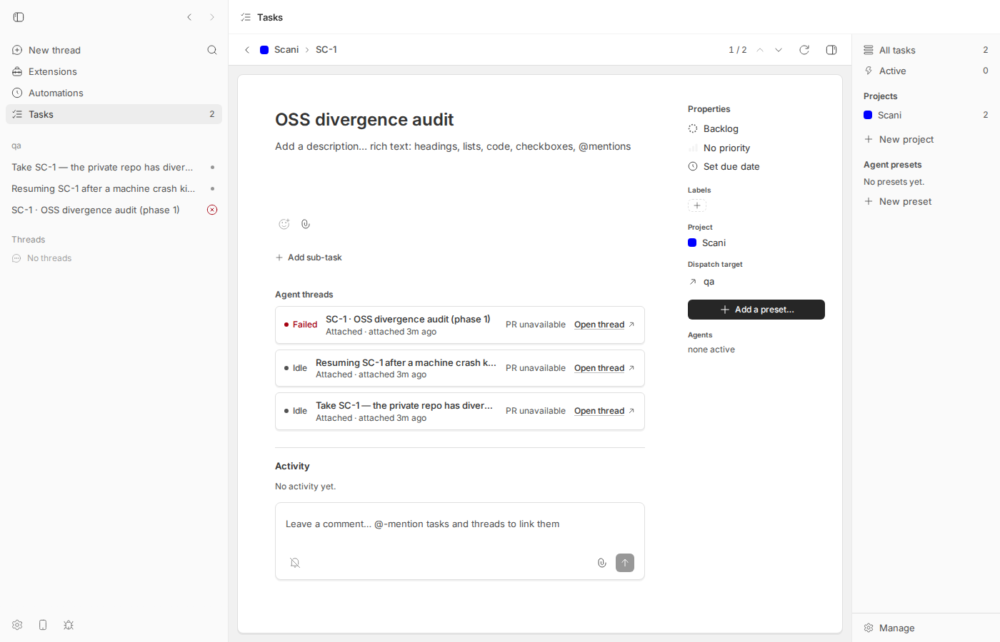

#1761 · Task thread attachments are append-only, and the list returns a dead thread first
TL;DR
Plain-language framing. The built-in tasks plugin keeps a table task_threads that records which bb agent threads are working on which task ("attachments"; not to be confused with file attachments, which are a different table and a different bb tasks attachment command). bb tasks attach <key> --thread <id> inserts a row; bb tasks threads <key> and the task detail page in the app list those rows.
The reporter is right on every point. The store's list query is ORDER BY attached_at, id (oldest first) and nothing in the CLI, the plugin RPC contracts, or the UI ever deletes a row: the store does have a deleteTaskThread function, but it is dead code that no RPC, CLI command, or UI control reaches. So an orchestrator that respawns a worker and attaches the new thread each time builds up a list whose first row is the oldest, usually dead, thread; and a thread that moves on to a new task keeps its row on the old task. I reproduced all of this on a fresh dev instance at the base commit with real codex threads (transcript and screenshot below), and wrote a small vitest file whose "BUG" assertions fail on main. Nothing on origin/main after the base commit touches plugins/tasks, so this is still open. This is a small, self-contained plugin change (store already has the delete; add an RPC + CLI + optional UI button, and change one ORDER BY).
Claims vs findings
| Claim | Status | Evidence |
|---|---|---|
bb tasks attach appends; a task accumulates every thread ever attached | Verified | upsertTaskThread is INSERT … ON CONFLICT (task_id, thread_id) DO UPDATE (plugins/tasks/db/store.ts#L1590-L1629); one row per (task, thread), never removed. Live repro: 3 attaches → 3 rows (transcript below). |
There is no detach; attachment remove is for files | Verified | bb tasks detach → unknown command: detach. Root help (plugins/tasks/cli/index.ts#L59-L78) has no inverse. tasksRpcContract and delegationRpcContract have no detach operation (grep for detach|deleteTaskThread across api/, shared/contract.ts, delegate/contract.ts = 0 hits). attachment remove <task_threads row id> → attachment not found. The UI thread card has only "Open thread" (plugins/tasks/views/detail/threads.tsx#L71-L116). |
bb tasks threads returns oldest-first, so the first row is usually a dead thread after respawns | Verified | listTaskThreads is SELECT * FROM task_threads WHERE task_id = ? ORDER BY attached_at, id (plugins/tasks/db/store.ts#L1631-L1640); the CLI table and the app render rows in that order. Repro output: first row thr_fy32f8grbs failed, live threads last. |
| A thread respawned onto new work keeps its old attachment (SC-187 thread shown under SC-202) | Verified | Attaching thr_estd3atd82 to SC-2 left its SC-1 row in place; the SC-2 row shows the SC-1 title (title is snapshotted at attach time from thread.title ?? titleFallback, plugins/tasks/delegate/index.ts#L405-L423). |
| "Self-worsening": re-attaching on every respawn makes ordering worse each time | Verified (one nuance) | Each respawn is a new thread id → new row appended after the dead ones. Nuance: re-attaching the same thread is idempotent (UNIQUE) and does not refresh attached_at, so it also cannot move a live thread to the front. |
| Reproduced on bb 0.38.0, macOS 26 | Version unverifiable, behavior confirmed | I reproduced on Linux at 16ceb3a54 (tasks plugin 0.1.1). The relevant code has been unchanged since the plugins merge (git log -S"ORDER BY attached_at" → e6be57e76 only). |
| "The Active view answers with a corpse" | Partly | The Tasks sidebar "Active" filter and the list-row agent chips only count starting/working threads (plugins/tasks/views/list/data.ts#L93-L99), so dead threads do not make a task look active there. The corpse-first problem is in the per-task thread list (CLI table, --json array order, bb tasks show, and the "Agent threads" section of the detail page). |
Environment
- bb
16ceb3a54(main, 2026-08-18), tasks plugin0.1.1installed withbb plugin install builtin:tasks. Worktree/home/sawyer/projects/bb/.claude/worktrees/wf_242c3e11-a10-30. - Dev instance: app
:13758, server:21758, host daemon:29758, data dir/home/sawyer/.bb-dev/projects-bb-.claude-worktrees-wf_242c3e11-a10-30-4235fe46eb15(tasks DB underplugins/tasks/in that dir). - Linux 7.0.0-29-generic, node v24.18.0, codex-cli 0.147.0 (provider
codex). Hosthost_uihn4w7euz, bb projectproj_92hz2xp5u3on/tmp/1761-qa. - CLI wrapper: 1761/repro/1761-bb.sh (
BB_REPO=<worktree> ./1761-bb.sh …; evaluatesscripts/bb-dev-app envand runspackages/scripts/dist/commands/run-cli.js). Below,bbmeans this wrapper.
Minimal reproduction
A. Unit test (fastest; no running instance)
File: 1761/repro/issue-1761.test.ts. Copy it to plugins/tasks/cli/ in your worktree and run it from plugins/tasks. It drives the real plugin CLI through createFakePluginHost with a stub threads.get that reports one thread as error and one as idle. All three tests fail on main at the assertions marked BUG: (1) the first listed thread is thr_dead_predecessor not thr_live_worker; (2) root help contains no detach; (3) bb tasks detach exits 1 with unknown command.
import { createFakePluginHost } from "@get-bb/plugin-sdk/testing";
import { describe, expect, it } from "vitest";
import plugin from "../server";
// Issue #1761: `bb tasks attach` is append-only (no inverse), and
// `bb tasks threads` lists attachments oldest-first, so after a respawn the
// first row is the dead predecessor. This test documents current behavior on
// main. The assertions marked "BUG" FAIL on 16ceb3a54 because the bug exists.
type ThreadStatus = "starting" | "active" | "idle" | "error";
function stdout(result: { exitCode: number; stdout: string; stderr: string }) {
expect(result, result.stderr).toMatchObject({ exitCode: 0, stderr: "" });
return result.stdout;
}
async function setup(statuses: Map<string, ThreadStatus>) {
const { bb, harness } = createFakePluginHost({
pluginId: "tasks",
sdk: {
threads: {
// The plugin reads the thread's live status from the SDK at attach
// time; the reconcile service does the same later.
get: async ({ threadId }) => ({
id: threadId,
title: `title of ${threadId}`,
titleFallback: null,
status: statuses.get(threadId) ?? "idle",
}),
send: async () => undefined,
},
},
});
await plugin(bb);
stdout(
await harness.runCli(["project", "create", "--name", "Scani", "--prefix", "SC"]),
);
stdout(
await harness.runCli(["create", "--project", "SC", "--title", "OSS audit"]),
);
return { bb, harness };
}
describe("issue #1761: task thread attachments", () => {
it("BUG: `bb tasks threads` returns the dead (oldest) thread first after a respawn", async () => {
const statuses = new Map<string, ThreadStatus>([
["thr_dead_predecessor", "error"],
["thr_live_worker", "idle"],
]);
const { harness } = await setup(statuses);
try {
// Orchestrator attaches the first worker; it later dies (status error).
stdout(await harness.runCli(["attach", "SC-1", "--thread", "thr_dead_predecessor"]));
// Respawn: the orchestrator attaches the replacement.
stdout(await harness.runCli(["attach", "SC-1", "--thread", "thr_live_worker"]));
const listed = JSON.parse(
stdout(await harness.runCli(["threads", "SC-1", "--json"])),
) as { taskThreads: Array<{ threadId: string; liveStatus: string }> };
// Both attachments accumulate (append-only)...
expect(listed.taskThreads.map((t) => t.threadId)).toEqual([
"thr_dead_predecessor",
"thr_live_worker",
]);
expect(listed.taskThreads[0]?.liveStatus).toBe("failed");
// ...and the human table puts the failed thread on the first row.
const table = stdout(await harness.runCli(["threads", "SC-1"]));
const firstRow = table.split("\n")[1] ?? "";
expect(firstRow).toContain("thr_dead_predecessor");
expect(firstRow).toContain("failed");
// BUG (fails on main): a reader expects the live thread first, i.e.
// most-recent-first or live-before-terminal ordering.
expect(listed.taskThreads[0]?.threadId).toBe("thr_live_worker");
} finally {
await harness.dispose();
}
});
it("BUG: there is no `detach` inverse for `attach`", async () => {
const { harness } = await setup(new Map([["thr_x", "idle"]]));
try {
stdout(await harness.runCli(["attach", "SC-1", "--thread", "thr_x"]));
const help = stdout(await harness.runCli(["--help"]));
expect(help).toContain("attach ");
// BUG (fails on main): help advertises no detach command...
expect(help).toContain("detach");
} finally {
await harness.dispose();
}
});
it("BUG: `bb tasks detach` is an unknown command", async () => {
const { harness } = await setup(new Map([["thr_x", "idle"]]));
try {
stdout(await harness.runCli(["attach", "SC-1", "--thread", "thr_x"]));
const result = await harness.runCli(["detach", "SC-1", "--thread", "thr_x"]);
// Documents current behavior; the "BUG" expectation below fails on main.
expect(result.stderr).toBe("unknown command: detach; run bb tasks --help");
expect(result.exitCode).toBe(0);
} finally {
await harness.dispose();
}
});
});
$ cd plugins/tasks && pnpm exec vitest run cli/issue-1761.test.ts
RUN v4.1.1 /home/sawyer/projects/bb/.claude/worktrees/wf_242c3e11-a10-30/plugins/tasks
❯ bb-plugin-tasks cli/issue-1761.test.ts (3 tests | 3 failed) 27ms
× BUG: `bb tasks threads` returns the dead (oldest) thread first after a respawn 18ms
× BUG: there is no `detach` inverse for `attach` 5ms
× BUG: `bb tasks detach` is an unknown command 4ms
⎯⎯⎯⎯⎯⎯⎯ Failed Tests 3 ⎯⎯⎯⎯⎯⎯⎯
FAIL bb-plugin-tasks cli/issue-1761.test.ts > issue #1761: task thread attachments > BUG: `bb tasks threads` returns the dead (oldest) thread first after a respawn
AssertionError: expected 'thr_dead_predecessor' to be 'thr_live_worker' // Object.is equality
Expected: "thr_live_worker"
Received: "thr_dead_predecessor"
❯ cli/issue-1761.test.ts:76:47
74| // BUG (fails on main): a reader expects the live thread first, …
75| // most-recent-first or live-before-terminal ordering.
76| expect(listed.taskThreads[0]?.threadId).toBe("thr_live_worker");
| ^
77| } finally {
78| await harness.dispose();
⎯⎯⎯⎯⎯⎯⎯⎯⎯⎯⎯⎯⎯⎯⎯⎯⎯⎯⎯⎯⎯⎯⎯⎯[1/3]⎯
FAIL bb-plugin-tasks cli/issue-1761.test.ts > issue #1761: task thread attachments > BUG: there is no `detach` inverse for `attach`
AssertionError: expected 'Usage: bb tasks <command> [options]\n…' to contain 'detach'
- Expected
+ Received
- detach
+ Usage: bb tasks <command> [options]
+
+ Commands:
+ status Show plugin status
+ project create|list|show|update
+ folder create|list|update
+ create Create a task
+ list List tasks
+ show Show full task details
+ update Update a task
+ comment Add a task comment
+ label create|list|delete
+ attachment add|get|list|remove
+ preset list|show|create|update|delete
+ dispatch Dispatch a task to a new agent thread
+ attach Attach an agent thread to a task
+ threads List threads attached to a task
+ seed-demo Create sample data (requires --yes)
+
+ Run bb tasks <command> --help for command usage.
❯ cli/issue-1761.test.ts:90:20
88| expect(help).toContain("attach ");
89| // BUG (fails on main): help advertises no detach command...
90| expect(help).toContain("detach");
| ^
91| } finally {
92| await harness.dispose();
⎯⎯⎯⎯⎯⎯⎯⎯⎯⎯⎯⎯⎯⎯⎯⎯⎯⎯⎯⎯⎯⎯⎯⎯[2/3]⎯
FAIL bb-plugin-tasks cli/issue-1761.test.ts > issue #1761: task thread attachments > BUG: `bb tasks detach` is an unknown command
AssertionError: expected 1 to be +0 // Object.is equality
- Expected
+ Received
- 0
+ 1
❯ cli/issue-1761.test.ts:103:31
101| // Documents current behavior; the "BUG" expectation below fails…
102| expect(result.stderr).toBe("unknown command: detach; run bb task…
103| expect(result.exitCode).toBe(0);
| ^
104| } finally {
105| await harness.dispose();
⎯⎯⎯⎯⎯⎯⎯⎯⎯⎯⎯⎯⎯⎯⎯⎯⎯⎯⎯⎯⎯⎯⎯⎯[3/3]⎯
Test Files 1 failed (1)
Tests 3 failed (3)
Start at 07:57:03
Duration 495ms (transform 176ms, setup 113ms, import 256ms, tests 27ms, environment 0ms)
Full output: 1761/repro/issue-1761-test.out.
B. Live CLI repro against a dev instance (mirrors the issue's transcript)
pnpm install --frozen-lockfile --prefer-offline && pnpm exec turbo run build && scripts/bb-dev-app current;export BB_REPO=$PWD.- Create a scratch git repo (
/tmp/1761-qa) and a bb project on it (curl in the Appendix), thenbb plugin install builtin:tasks --yes(the fresh dev data dir has no plugins installed). - Create a tasks project + task, spawn a worker with a bogus model so it lands in
status: error, attach it; spawn two healthy workers, attach each; list.
Expected (issue): the thread holding the work is listed first, or a way exists to remove the dead one. Actual: first row is failed, no detach command, and the thread later attached to SC-2 remains on SC-1. Full transcript (1761/repro/1761-cli-session.txt):
# bb = /tmp/bb-reports/issues/1761/repro/1761-bb.sh with BB_REPO=<worktree at 16ceb3a54>
# dev instance: app :13758, server :21758, daemon :29758
# data dir: /home/sawyer/.bb-dev/projects-bb-.claude-worktrees-wf_242c3e11-a10-30-4235fe46eb15
$ bb plugin install builtin:tasks --yes
$ bb tasks project create --name "Scani" --prefix SC --link-bb-project proj_92hz2xp5u3
$ bb tasks create --project SC --title "OSS divergence audit" # -> SC-1
# worker 1: forced into status=error with a bogus model (stands in for "machine crash killed your predecessor")
$ bb thread spawn --project proj_92hz2xp5u3 --provider codex --model totally-bogus-model-xyz --permission-mode accept-edits --title "SC-1 · OSS divergence audit (phase 1)" --prompt "Reply only with ok." # thr_fy32f8grbs
$ bb thread show thr_fy32f8grbs --json | grep '"status"' -> "status": "error"
$ bb tasks attach SC-1 --thread thr_fy32f8grbs
Attached thr_fy32f8grbs to SC-1
# worker 2 (respawn)
$ bb thread spawn --project proj_92hz2xp5u3 --provider codex --permission-mode accept-edits --title "Resuming SC-1 after a machine crash killed your predecessor" --prompt "Reply only with ok." # thr_xiwb5bxu5x
$ bb thread wait thr_xiwb5bxu5x --timeout 90
$ bb tasks attach SC-1 --thread thr_xiwb5bxu5x
Attached thr_xiwb5bxu5x to SC-1
# worker 3 (respawn again)
$ bb thread spawn --project proj_92hz2xp5u3 --provider codex --permission-mode accept-edits --title "Take SC-1 — the private repo has diverged from its own upstream" --prompt "Reply only with ok." # thr_estd3atd82
$ bb thread wait thr_estd3atd82 --timeout 90
$ bb tasks attach SC-1 --thread thr_estd3atd82
Attached thr_estd3atd82 to SC-1
$ bb tasks threads SC-1
THREAD STATUS PRESET TITLE
thr_fy32f8grbs failed Attached SC-1 · OSS divergence audit (phase 1)
thr_xiwb5bxu5x idle Attached Resuming SC-1 after a machine crash killed your predecessor
thr_estd3atd82 idle Attached Take SC-1 — the private repo has diverged from its own upstream
$ bb tasks threads SC-1 --json
{"task":{"id":"01M09XPA7J83N4ZS7JYFBTD936","projectId":"01M09XP9J4NTD9BZFGV9ZXGKRJ","number":1,"key":"SC-1","title":"OSS divergence audit","description":"","status":"backlog","priority":"none","dueDate":null,"parentTaskId":null,"position":1024,"createdAt":"2026-08-18T07:52:05.106Z","updatedAt":"2026-08-18T07:52:05.106Z","labelIds":[]},"taskThreads":[{"id":"01M09XQHXM4FZ79XQCMETVB6KC","taskId":"01M09XPA7J83N4ZS7JYFBTD936","threadId":"thr_fy32f8grbs","presetName":"Attached","title":"SC-1 · OSS divergence audit (phase 1)","liveStatus":"failed","attachedAt":"2026-08-18T07:52:45.748Z","updatedAt":"2026-08-18T07:52:45.748Z"},{"id":"01M09XQT4RKBHGNYBYPW62VE9B","taskId":"01M09XPA7J83N4ZS7JYFBTD936","threadId":"thr_xiwb5bxu5x","presetName":"Attached","title":"Resuming SC-1 after a machine crash killed your predecessor","liveStatus":"idle","attachedAt":"2026-08-18T07:52:54.168Z","updatedAt":"2026-08-18T07:52:54.168Z"},{"id":"01M09XR0K460WGABW3P5YTGC0P","taskId":"01M09XPA7J83N4ZS7JYFBTD936","threadId":"thr_estd3atd82","presetName":"Attached","title":"Take SC-1 — the private repo has diverged from its own upstream","liveStatus":"idle","attachedAt":"2026-08-18T07:53:00.773Z","updatedAt":"2026-08-18T07:53:00.773Z"}]}
$ bb tasks detach SC-1 --thread thr_fy32f8grbs
unknown command: detach; run bb tasks --help
exit=1
$ bb tasks attach --help
Usage: bb tasks attach <key> [--thread <thread-id>] [--json]
$ bb tasks attachment remove 01M09XQHXM4FZ79XQCMETVB6KC # the task_threads row id; "attachment" is the file-attachment table
attachment not found: 01M09XQHXM4FZ79XQCMETVB6KC
exit=1
# a thread respawned onto NEW work keeps its old attachment (issue's "wrong task by title" observation)
$ bb tasks create --project SC --title "PaymentFormPage strings" # -> SC-2
$ bb tasks attach SC-2 --thread thr_estd3atd82
Attached thr_estd3atd82 to SC-2
$ bb tasks threads SC-1
THREAD STATUS PRESET TITLE
thr_fy32f8grbs failed Attached SC-1 · OSS divergence audit (phase 1)
thr_xiwb5bxu5x idle Attached Resuming SC-1 after a machine crash killed your predecessor
thr_estd3atd82 idle Attached Take SC-1 — the private repo has diverged from its own upstream
$ bb tasks threads SC-2
THREAD STATUS PRESET TITLE
thr_estd3atd82 idle Attached Take SC-1 — the private repo has diverged from its own upstream
$ bb tasks show SC-1 | sed -n '/Attached threads/,/^$/p'
Attached threads
THREAD STATUS PRESET TITLE
thr_fy32f8grbs failed Attached SC-1 · OSS divergence audit (phase 1)
thr_xiwb5bxu5x idle Attached Resuming SC-1 after a machine crash killed your predecessor
thr_estd3atd82 idle Attached Take SC-1 — the private repo has diverged from its own upstream
$ sqlite3 <data dir>/plugins/tasks/*.db "select thread_id, live_status, attached_at from task_threads order by attached_at"
thr_fy32f8grbs|failed|2026-08-18T07:52:45.748Z
thr_xiwb5bxu5x|idle|2026-08-18T07:52:54.168Z
thr_estd3atd82|idle|2026-08-18T07:53:00.773Z
thr_estd3atd82|idle|2026-08-18T07:53:13.770Z

attached_at order as the CLI). Each card offers only "Open thread": there is no remove/detach control. Right rail "Agents: none active" shows why the sidebar Active count is unaffected.Root cause
1. Oldest-first ordering. The single read path for a task's threads is the store query in plugins/tasks/db/store.ts#L1631-L1640:
function listTaskThreads(taskId: string): TaskThread[] {
return db
.prepare<[string], TaskThreadRow>(
`
SELECT * FROM task_threads WHERE task_id = ? ORDER BY attached_at, id
`,
)
.all(taskId)
.map(taskThreadFromRow);
}
The plugin RPC listTaskThreads (plugins/tasks/api/index.ts#L990-L992) returns that array unchanged; the CLI runThreads (plugins/tasks/cli/index.ts#L1816-L1840) and bb tasks show print it in that order; the detail view maps it to cards in that order (plugins/tasks/views/detail/threads.tsx#L71-L116). Nothing sorts by liveness or recency, so after N respawns the first N-1 rows are the terminal ones.
2. Attach has no inverse anywhere above the store. upsertTaskThread (plugins/tasks/db/store.ts#L1590-L1629) is append-or-refresh keyed on UNIQUE (task_id, thread_id) (plugins/tasks/db/schema.ts#L85-L96). The store exports deleteTaskThread (plugins/tasks/db/store.ts#L1674-L1679) but it is unreferenced outside the store: neither tasksRpcContract (plugins/tasks/shared/contract.ts#L616-L619 is the only thread-related entry) nor delegationRpcContract (plugins/tasks/delegate/contract.ts#L20-L25: delegate and taskThreadsAttach only) exposes it, so neither the CLI (runAttach, plugins/tasks/cli/index.ts#L1786-L1814) nor the app can call it. The only deletion path is ON DELETE CASCADE when the task itself is deleted.
3. Why the "wrong task" row appears. taskThreadsAttach snapshots thread.title ?? titleFallback into the row at attach time (plugins/tasks/delegate/index.ts#L405-L423) and never rewrites it, and attaching to task B does not touch the row on task A. A long-lived orchestrator thread that is pointed at successive tasks therefore shows up on every one of them, under the title it had when first attached.
Adjacent behavior worth knowing (not the reported bug). Once a row reaches failed/completed, the reconcile service never revisits it (plugins/tasks/lifecycle/index.ts#L60-L70 and plugins/tasks/lifecycle/index.ts#L123-L134 filter terminal rows out). A thread that errored and was later resumed successfully stays failed in the task list unless it is explicitly re-attached (the upsert refreshes live_status). Combined with append-only rows and oldest-first order, that makes the stale failed row on top even stickier.
Already fixed? No. git log 16ceb3a54..origin/main -- plugins/tasks is empty as of 2026-08-18.
Proposed fix (first principles)
- Add the inverse (root cause). Add
taskThreadsDetach: { input: { taskId, threadId }, output: { removed: boolean } }todelegationRpcContractnext totaskThreadsAttach, implement it indelegate/index.tswith the existingstore.tasks.getTaskThreadByThreadId+deleteTaskThread, thenpublishThreadsChanged/publishTasksChangedso the app refreshes. Addbb tasks detach <key> [--thread <id>](same--thread/BB_THREAD_ID/ctx.threadIdresolution asrunAttach), aDETACH_HELP, a root-help line, and a "Remove" affordance on the thread card inviews/detail/threads.tsx. Per AGENTS.md, update the README command table andskills/tasks/SKILL.mdin the same change (step 6 of the skill tells agents to attach; it should also say to detach when handing off). Plugin-internal only: noHOST_DAEMON_PROTOCOL_VERSIONconcern. Risk: a live thread's system comments ("Thread … completed") still reference the thread id after detach, which is fine, but decide whether detach should also stop the reconcile service from tracking it (it will, sincetrackedThreadsreads the table). - Order live threads first (cheap legibility fix, independent of 1). Change the store query to something like
ORDER BY CASE WHEN live_status IN ('failed','completed') THEN 1 ELSE 0 END, attached_at DESC, id DESC(or plainattached_at DESCif you want strict recency). BecauselistTaskThreadsis the only read path, CLI,--json,show, the detail cards, and the PR resolution all follow. Check the existing test atplugins/tasks/cli/cli.test.tsandviews/detail/threads.test.tsxfor order assumptions. Risk: consumers that assumed chronological order (the activity/comment feed does not use this list, so I found none). - Optional: on
taskThreadsAttach, refreshattached_attoo, so re-attaching a revived thread moves it to the front under the recency ordering; and let the reconcile service revisit terminal rows when the thread reappears asidle/active.
PR review
No open PRs are linked to this issue.
Related issues
- #1144: task dependencies (same plugin; another "task model lacks an edge type" gap).
- Tasks plugin origin: #728; the
task_threadsquery has been unchanged since e6be57e76 (plugins merge).
Appendix
Commands run
# worktree /home/sawyer/projects/bb/.claude/worktrees/wf_242c3e11-a10-30 (was ahead of base; checked out 16ceb3a54)
git checkout 16ceb3a54
pnpm install --frozen-lockfile --prefer-offline
pnpm exec turbo run build
scripts/bb-dev-app current # app :13758, server :21758, daemon :29758
mkdir -p /tmp/1761-qa && git -C /tmp/1761-qa init && git -C /tmp/1761-qa commit --allow-empty -m init
curl -s -X POST http://localhost:21758/api/v1/projects -H 'content-type: application/json' \
-d '{"name":"qa","source":{"type":"local_path","path":"/tmp/1761-qa","hostId":"host_uihn4w7euz"}}' # -> proj_92hz2xp5u3 (hostId from `bb machine list --json`)
export BB_REPO=$PWD; bb=/tmp/bb-reports/issues/1761/repro/1761-bb.sh
$bb plugin install builtin:tasks --yes
$bb tasks project create --name Scani --prefix SC --link-bb-project proj_92hz2xp5u3 --json
$bb tasks create --project SC --title "OSS divergence audit" --json
$bb thread spawn --project proj_92hz2xp5u3 --provider codex --model totally-bogus-model-xyz --permission-mode accept-edits --title "SC-1 · OSS divergence audit (phase 1)" --prompt "Reply only with ok." --json
$bb thread show thr_fy32f8grbs --json | grep '"status"'
$bb tasks attach SC-1 --thread thr_fy32f8grbs
$bb thread spawn … --title "Resuming SC-1 after a machine crash killed your predecessor" --prompt "Reply only with ok." --json ; $bb thread wait thr_xiwb5bxu5x --timeout 90 ; $bb tasks attach SC-1 --thread thr_xiwb5bxu5x
$bb thread spawn … --title "Take SC-1 — the private repo has diverged from its own upstream" --prompt "Reply only with ok." --json ; $bb thread wait thr_estd3atd82 --timeout 90 ; $bb tasks attach SC-1 --thread thr_estd3atd82
$bb tasks threads SC-1 ; $bb tasks threads SC-1 --json ; $bb tasks show SC-1
$bb tasks detach SC-1 --thread thr_fy32f8grbs ; $bb tasks attach --help ; $bb tasks attachment remove 01M09XQHXM4FZ79XQCMETVB6KC
$bb tasks create --project SC --title "PaymentFormPage strings" ; $bb tasks attach SC-2 --thread thr_estd3atd82 ; $bb tasks threads SC-2
sqlite3 <data dir>/plugins/tasks/*.db "select thread_id, live_status, attached_at from task_threads order by attached_at"
dev-browser --browser bb1761 --headless run /tmp/bb-reports/issues/1761/repro/shot1.js # screenshot of Tasks -> SC-1
cp plugins/tasks/cli/issue-1761.test.ts … ; cd plugins/tasks && pnpm exec vitest run cli/issue-1761.test.ts
git fetch origin main ; git log 16ceb3a54..origin/main --oneline -- plugins/tasks # (empty)
pnpm dev:stop
Code-search evidence
$ grep -rn "deleteTaskThread" plugins/tasks --include=*.ts --include=*.tsx | grep -v node_modules
plugins/tasks/db/store.ts:1674: function deleteTaskThread(id: string): boolean {
plugins/tasks/db/store.ts:1857: deleteTaskThread,
$ grep -n "detach\|deleteTaskThread" plugins/tasks/api/index.ts plugins/tasks/shared/contract.ts plugins/tasks/delegate/contract.ts | wc -l
0
$ git log -S"ORDER BY attached_at" --oneline -- plugins/tasks
e6be57e76 Merge official-plugins into plugins (#1079)
Screenshot script
1761/repro/shot1.js (dev-browser; navigates to /plugins/tasks/tasks, clicks "Open SC-1: OSS divergence audit", screenshots).